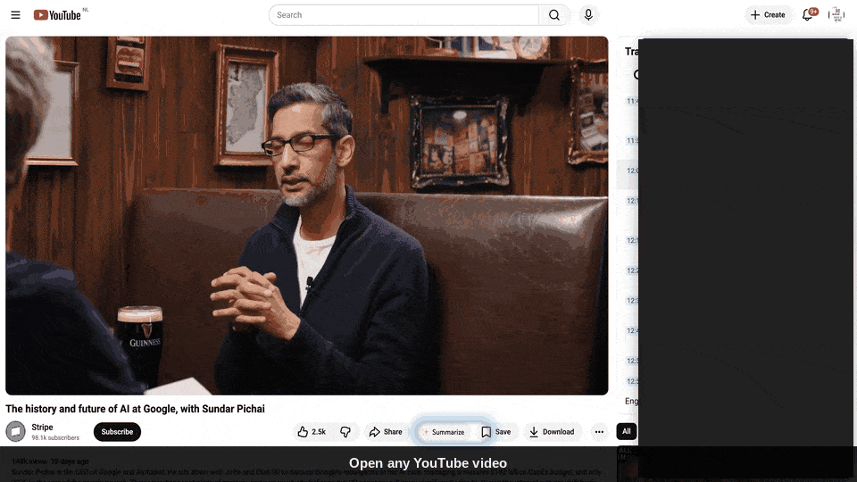

Summarize any YouTube video
with your favorite LLM
Claude, GPT, Gemini, or local Ollama. Multi-modal. BYO API key. Zero backend. Open source.





🧠 Bring your own model
Swap between Anthropic, OpenAI, Gemini, and Ollama in Settings. Your key, your choice.
🖼 Multi-modal
Optional: attach chapter thumbnails so vision-capable models can see the video, not just read it.
⚡ Inline button
Summarize button appears right in YouTube's action row. One click.
🛡 Private by design
No backend. No telemetry. Key stays in chrome.storage.sync, requests go straight to the provider.
🧩 Three-strategy extractor
DOM scrape → innertube → legacy captions. Survives YouTube's frequent API churn.
📝 Structured output
TL;DR, Key Points, Takeaways — copy as markdown, regenerate, or tweak the system prompt.
Install from source
- Download the latest zip and unzip.
- Open
chrome://extensionsand enable Developer mode. - Click Load unpacked and select the unzipped
extension/folder. - Click the extension icon → Settings. Pick a provider, paste your API key, save.
- Open any YouTube video and click the ✨ Summarize button in the action row.
Providers
| Provider | Get a key | Vision | Default model |
|---|---|---|---|
| Anthropic (Claude) | console.anthropic.com | All models | claude-haiku-4-5 |
| OpenAI (GPT) | platform.openai.com | GPT-4o family | gpt-4o-mini |
| Google Gemini | aistudio.google.com | All recent | gemini-2.0-flash |
| Ollama (local) | — | Model-dependent | llama3.2 |